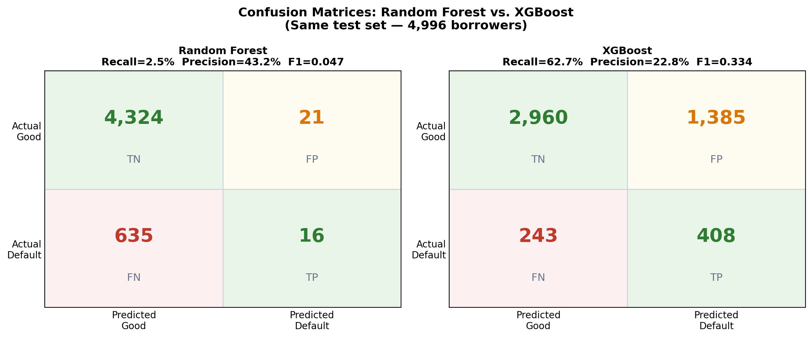
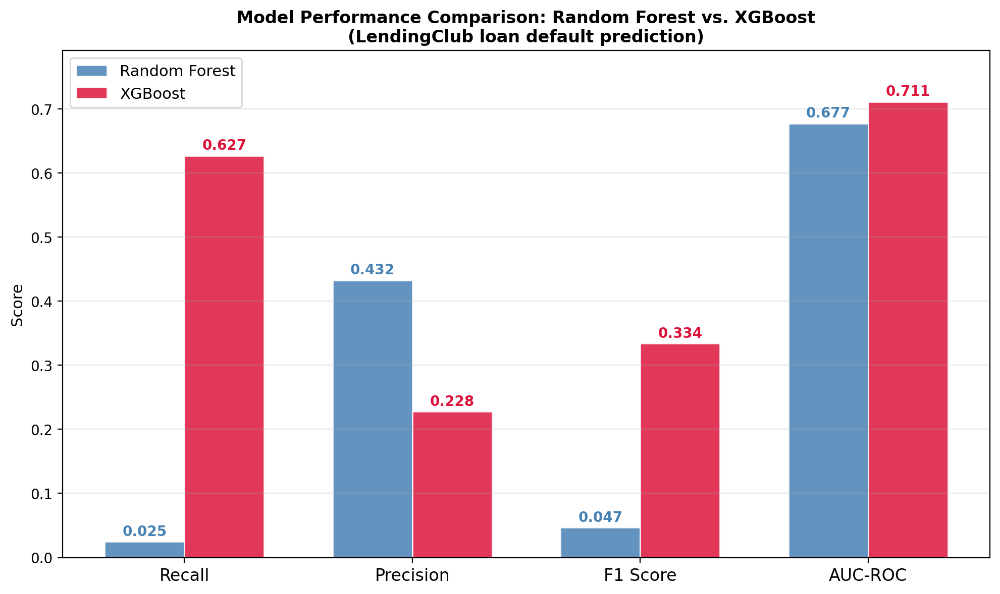
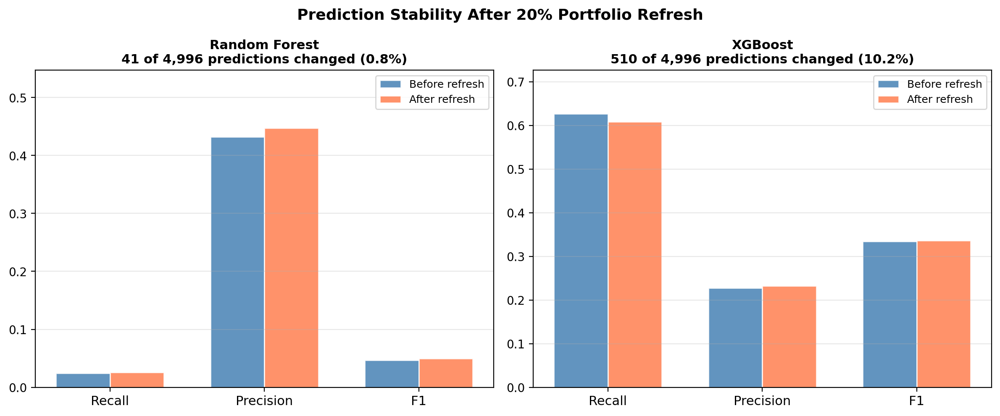
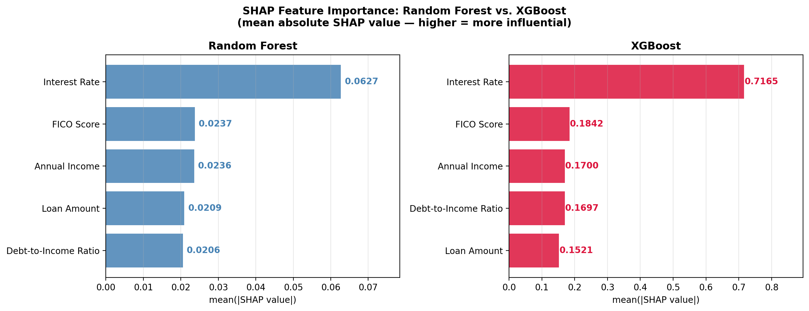
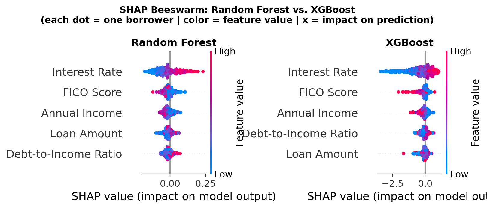
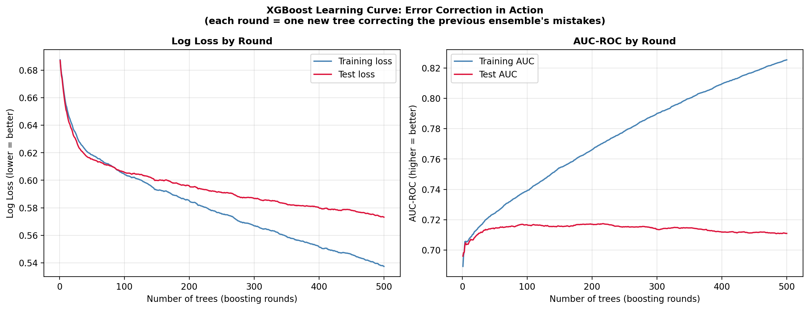

XGBoost Catches 25x
More Defaults.
Here's What That Costs You.
Random Forest asks 500 trees to vote. XGBoost asks each new tree to fix what the last one got wrong. Same problem, completely different philosophy, and on real LendingClub data, the difference is not subtle. Here's the full head-to-head: performance, stability, and explainability.
500 Trees Voting vs. 500 Trees Correcting
Random Forest builds 500 independent trees and lets them vote. XGBoost builds 500 trees sequentially, each one trained specifically to fix what the previous ensemble got wrong. Same dataset, same target, completely different philosophy.
I wanted to know which one actually catches more defaults on real credit risk data, and whether the winner pays a price for it. The results surprised me.
Two Philosophies, Explained Without Math
Before any code, the intuition matters, because these two algorithms approach the same problem from opposite directions.
Random Forest averages: 500 independent trees, each trained on a random sample of the data, vote and the majority wins. Individual errors get averaged out. The wisdom of the crowd.
XGBoost corrects: the first tree makes predictions and gets some wrong. The second tree is trained specifically on those mistakes. The third corrects what the second got wrong. And so on, for 500 rounds.
Averaging produces a stable, conservative model. Correcting produces a more aggressive, more sensitive model. Neither is "wrong". Which one you want depends on what your institution's errors actually cost.
Imports
import warnings
warnings.filterwarnings('ignore')
import pandas as pd
import numpy as np
import matplotlib.pyplot as plt
import shap
from sklearn.ensemble import RandomForestClassifier
from sklearn.model_selection import train_test_split
from sklearn.metrics import (
confusion_matrix, accuracy_score, recall_score,
precision_score, f1_score, roc_auc_score
)
import xgboost as xgb
# Install if needed:
# pip install scikit-learn xgboost shap pandas numpy matplotlibLoad the LendingClub Dataset
Same five borrower features and the same LendingClub sample used throughout this tutorial series, so results here are directly comparable to the Decision Trees vs. Random Forest and SHAP tutorials.
DATA_PATH = "lendingclub_sample_25000.csv" # update path if needed
df = pd.read_csv(DATA_PATH, low_memory=False)
FEATURES = ['int_rate', 'dti', 'fico_range_high', 'annual_inc', 'loan_amnt']
TARGET = 'bad_loan'
FEATURE_LABELS = {
'int_rate': 'Interest Rate',
'dti': 'Debt-to-Income Ratio',
'fico_range_high': 'FICO Score',
'annual_inc': 'Annual Income',
'loan_amnt': 'Loan Amount'
}
df = df[FEATURES + [TARGET]].dropna()
df[TARGET] = pd.to_numeric(df[TARGET], errors='coerce')
df = df.dropna()
X = df[FEATURES].rename(columns=FEATURE_LABELS)
y = df[TARGET].astype(int)
X_train, X_test, y_train, y_test = train_test_split(
X, y, test_size=0.2, random_state=42, stratify=y
)
print(f"Dataset: {len(df):,} loans | Bad loan rate: {y.mean():.1%}")Train Both Models
Both models get 500 trees, so neither wins on a raw tree-count advantage. Everything else about this comparison follows from how each algorithm uses those 500 trees, not from how many it gets.
rf = RandomForestClassifier(
n_estimators=500,
random_state=42,
n_jobs=-1
)
rf.fit(X_train, y_train)
xgb_model = xgb.XGBClassifier(
n_estimators=500,
learning_rate=0.05,
max_depth=4,
subsample=0.8,
colsample_bytree=0.8,
scale_pos_weight=(y_train == 0).sum() / (y_train == 1).sum(),
random_state=42,
eval_metric='logloss',
verbosity=0
)
xgb_model.fit(X_train, y_train)scale_pos_weight tells XGBoost how much more a missed default should cost than a missed good loan: here, roughly 6.7 to 1. Without this adjustment, XGBoost's recall on defaults collapses toward Random Forest's.
Head-to-Head Performance
Same test set for both models: 4,996 borrowers held out from training.
def get_metrics(name, y_true, y_pred, y_prob):
cm = confusion_matrix(y_true, y_pred)
tn, fp, fn, tp = cm.ravel()
acc = accuracy_score(y_true, y_pred)
rec = recall_score(y_true, y_pred, zero_division=0)
pre = precision_score(y_true, y_pred, zero_division=0)
f1 = f1_score(y_true, y_pred, zero_division=0)
auc = roc_auc_score(y_true, y_prob)
print(f"\n{name}")
print(f" TN={tn:,} FP={fp:,} FN={fn:,} TP={tp:,}")
print(f" Accuracy={acc:.3f} Recall={rec:.3f} Precision={pre:.3f} F1={f1:.3f} AUC={auc:.3f}")
return dict(name=name, tn=tn, fp=fp, fn=fn, tp=tp, acc=acc, rec=rec, pre=pre, f1=f1, auc=auc)
rf_metrics = get_metrics("Random Forest", y_test, rf.predict(X_test), rf.predict_proba(X_test)[:, 1])
xgb_metrics = get_metrics("XGBoost", y_test, xgb_model.predict(X_test), xgb_model.predict_proba(X_test)[:, 1])
Figure: Random Forest flags almost nobody as risky and misses nearly every default. XGBoost catches 408 of 651 actual defaults, at the cost of 1,385 false alarms on good borrowers.

Figure: XGBoost wins on three of four metrics: recall, F1, and AUC-ROC. Random Forest wins on precision. The size of that precision gap is the real story here.
Stability Test: 20% Data Refresh
The Decision Trees vs. Random Forest tutorial showed Random Forest is far more stable than a single Decision Tree after a routine data refresh. The open question here: how does XGBoost compare to Random Forest on the same test?
np.random.seed(42)
n = len(X_train)
keep_idx = np.random.choice(X_train.index, int(n * 0.80), replace=False)
X_keep = X_train.loc[keep_idx]
y_keep = y_train.loc[keep_idx]
n_new = n - len(keep_idx)
X_new = X_keep.sample(n_new, replace=True, random_state=7).copy()
X_new['Interest Rate'] += np.random.normal(0.5, 0.3, n_new)
X_new['FICO Score'] += np.random.normal(-5, 3, n_new)
X_new.index = range(max(X_train.index) + 1, max(X_train.index) + 1 + n_new)
y_new = y_keep.sample(n_new, replace=True, random_state=7)
y_new.index = X_new.index
X_train2 = pd.concat([X_keep, X_new])
y_train2 = pd.concat([y_keep, y_new])
rf2 = RandomForestClassifier(n_estimators=500, random_state=42, n_jobs=-1)
rf2.fit(X_train2, y_train2)
xgb2 = xgb.XGBClassifier(
n_estimators=500, learning_rate=0.05, max_depth=4,
subsample=0.8, colsample_bytree=0.8,
scale_pos_weight=(y_train2 == 0).sum() / (y_train2 == 1).sum(),
random_state=42, eval_metric='logloss', verbosity=0
)
xgb2.fit(X_train2, y_train2)
rf_flipped = (rf.predict(X_test) != rf2.predict(X_test)).sum()
xgb_flipped = (xgb_model.predict(X_test) != xgb2.predict(X_test)).sum()
Figure: Random Forest's metrics barely move after the refresh. XGBoost's aggregate metrics look similarly stable, but 10.2% of individual borrowers still received a different prediction, a shift that's invisible if you only watch the headline numbers.
SHAP Comparison: Both Models
Both models agree that interest rate is the dominant feature, and that agreement matters. It means the underlying credit risk signal is real, not an artifact of either algorithm's particular mechanics. But the degree of dominance, and the scale it's measured on, differ in a way that's easy to misread.
X_sample = X_test.sample(500, random_state=42)
# Random Forest SHAP
bg_rf = shap.maskers.Independent(X_train, max_samples=100)
explainer_rf = shap.TreeExplainer(rf, bg_rf)
sv_rf = explainer_rf(X_sample)[:, :, 1]
# XGBoost SHAP
explainer_xgb = shap.TreeExplainer(xgb_model)
sv_xgb = explainer_xgb(X_sample)
imp_rf = pd.Series(np.abs(sv_rf.values).mean(axis=0), index=X_sample.columns).sort_values(ascending=False)
imp_xgb = pd.Series(np.abs(sv_xgb.values).mean(axis=0), index=X_sample.columns).sort_values(ascending=False)
Figure: Both models rank interest rate first. In XGBoost the gap to the second-place feature looks far larger in raw numbers. That's a scale artifact, not a bigger real-world effect.

Figure: Same directional story in both models: high interest rate (pink/red) pushes toward default, low interest rate (blue) pushes away from it. Look at the x-axis scales, not just the dot patterns: Random Forest spans roughly -0.15 to +0.25, XGBoost spans roughly -3.0 to +1.0. Same signal, different units.
Error Correction in Action
This is where the sequential error-correction philosophy becomes visible. Each point on the x-axis is one additional tree added to the XGBoost ensemble, tracked on both the training set and the held-out test set.
xgb_lc = xgb.XGBClassifier(
n_estimators=500, learning_rate=0.05, max_depth=4,
subsample=0.8, colsample_bytree=0.8,
scale_pos_weight=(y_train == 0).sum() / (y_train == 1).sum(),
random_state=42, eval_metric=['logloss', 'auc'], verbosity=0
)
xgb_lc.fit(
X_train, y_train,
eval_set=[(X_train, y_train), (X_test, y_test)],
verbose=False
)
results = xgb_lc.evals_result()
Figure: Training loss keeps falling and training AUC keeps climbing all the way to round 500. Test performance levels off around round 100 and barely moves after that.
The Honest Verdict
XGBoost wins on default detection, and it isn't close. 408 defaults caught versus 16 is not a marginal difference. It's the difference between a model that functions as a credit risk tool and one that effectively predicts "good loan" for almost everyone.
But the win has real costs. Precision drops: for every default XGBoost correctly identifies, it incorrectly flags roughly three good borrowers. Stability drops: a 10.2% prediction flip after a routine refresh means roughly one in ten borrowers could see a different outcome month over month, regardless of any change in their own risk. And overfitting needs attention: the learning curve plateaus around round 100, so running 500 rounds without early stopping isn't optimal.
Catching defaults is the primary objective, false positives are manageable: use XGBoost, with proper tuning and early stopping.
Prediction stability across refreshes matters as much as raw detection: use Random Forest, possibly combined with threshold adjustment to improve recall.
Production system, monthly retraining, regulatory oversight: consider both, with careful monitoring of prediction drift after each refresh.
The choice between XGBoost and Random Forest isn't which algorithm is better. It's what you're optimizing for, and what your institution's costs are for each type of error.
Browse all tutorials in Resources.
Back to Resources →